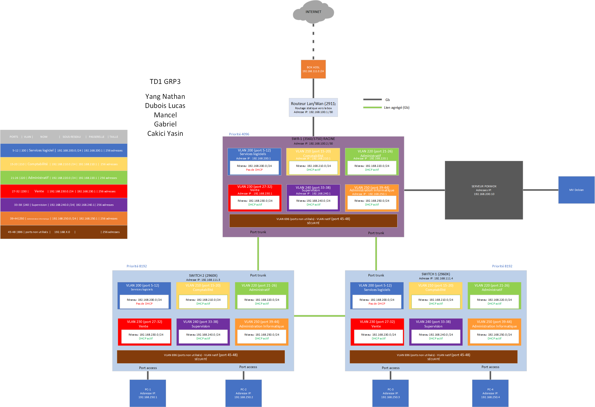
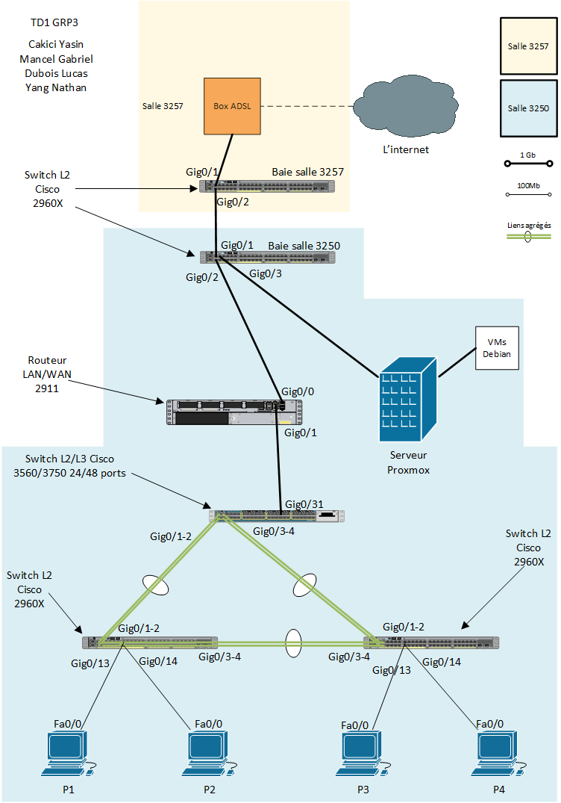

SAÉ 1.02 – S'initier aux réseaux informatiques
1. Contexte et Objectifs de la mission
Contexte professionnel : Ce projet en groupe de 4 étudiants simulait une réponse à un appel d'offres pour la refonte complète de l'infrastructure réseau du bâtiment C de l'IUT Grand Ouest Normandie (site d'Ifs).
Mission confiée : À partir d'un cahier des charges détaillé et de plans architecturaux, nous devions concevoir l'architecture physique et logique du nouveau réseau. Cela incluait le plan d'adressage IP, le choix du matériel (commutateurs, jarretières, rocades), la simulation sur Packet Tracer, et la rédaction d'un devis estimatif.
Compétences BUT ciblées : RT1 - Administrer les réseaux et l'Internet (Coefficient 31).
2. Apprentissages Critiques (AC) mobilisés
Au cours de ce projet d'infrastructure, j'ai particulièrement mis en œuvre les apprentissages suivants :
- AC 11.02 : Comprendre l’architecture et les fondements des systèmes numériques.
→ Comment je l'ai mobilisé : En réalisant un plan d'adressage IP optimisé (VLSM) pour diviser le réseau en sous-réseaux logiques fonctionnels (VLANs pour l'administration, les salles machines, le WiFi, etc.). - AC 11.03 : Configurer les fonctions de base du réseau local.
→ Comment je l'ai mobilisé : En configurant les VLANs, les trunks (802.1Q) et les adresses IP sur les commutateurs Cisco virtuels dans l'environnement Packet Tracer.
3. Tâches réalisées et Méthodologie
Le projet s'est déroulé en suivant une démarche d'ingénierie réseau classique:
- Analyse des besoins : Étude du cahier des charges et des plans du bâtiment pour déterminer l'emplacement des baies de brassage (répartiteurs de bâtiment et d'étage) et le nombre de prises RJ45 nécessaires.
- Conception logique : Élaboration du plan d'adressage IP (calcul des masques, plages d'adresses, passerelles) et affectation des VLANs.
- Simulation : Déploiement virtuel de la topologie sur Cisco Packet Tracer pour valider la communication entre les différents équipements.
- Choix technologiques : Sélection du matériel actif (Switchs Cisco Catalyst) et passif (câbles fibres optiques, rocades cuivres) avec établissement d'un budget.
4. Preuves et Traces de réalisation
Trace 1 : Architecture logique sous Cisco Packet Tracer
Description : Schéma topologique réalisé sur Packet Tracer montrant l'interconnexion des commutateurs (distribution et accès) avec la configuration des différents VLANs.

Justification du choix : Cette trace prouve ma capacité à traduire un besoin théorique en une infrastructure réseau fonctionnelle (AC 11.03). Elle démontre la maîtrise des concepts de segmentation réseau (VLAN) et de liens agrégés (Trunk).
Trace 2 : Implantation physique sur plan (Baies de brassage)
Description : Plan architectural du bâtiment annoté avec l'emplacement stratégique des sous-répartiteurs et le tracé des rocades (cuivre et fibre optique).

Justification du choix : J'ai choisi cette image car elle illustre la dimension matérielle et physique du métier d'administrateur réseau. Elle prouve ma capacité à concevoir un câblage structuré en respectant les contraintes de distance (100m max pour le cuivre) et d'organisation spatiale d'un bâtiment.
5. Autoévaluation et Démarche Réflexive
Difficultés rencontrées & Solutions apportées
La principale difficulté de ce projet a été la réalisation du plan d'adressage VLSM (Variable Length Subnet Mask). Au départ, notre découpage entraînait un gaspillage d'adresses IP sur certains sous-réseaux. Pour résoudre ce problème, j'ai repris les calculs binaires avec mon groupe en commençant par les VLANs nécessitant le plus grand nombre d'hôtes pour optimiser la plage d'adresses globale.
Prise de recul (Bilan)
Cette SAÉ m'a permis de comprendre qu'un réseau informatique performant ne se résume pas à la configuration de routeurs. La phase d'ingénierie préliminaire (analyse des plans, choix des fibres multimodes/monomodes pour les rocades, chiffrage budgétaire) est tout aussi cruciale. J'ai également apprécié l'utilisation de Packet Tracer pour valider nos hypothèses théoriques par la simulation.
Capacité d'adaptation
La méthodologie appliquée ici (analyse des besoins, adressage, simulation, déploiement) est la base de tout projet d'infrastructure. Que ce soit pour une PME ou un campus universitaire complet, je suis désormais capable de structurer un réseau local de A à Z. Dans la perspective de mon parcours en Cybersécurité, avoir conçu cette architecture me permet de mieux comprendre comment un attaquant pourrait l'infiltrer (par exemple via des sauts de VLAN) et comment la protéger.